Table of Contents
- Setup & Data Overview
- Missing Values
- Feature Distributions
- Target Distribution
- Geographic Distribution (Basic)
- Geographic Distribution (Price & Population)
- Correlation Heatmap
- Target Correlation Bar
- Scatter Matrix
- Income vs. Price
- Ocean Proximity Analysis
- Engineered Features Correlation
- Model Performance Comparison
- Training Loss Curves
- Log Transform Impact — Model Performance
- Log Transform Impact — Loss Curves
1. Setup & Data Overview
The dataset is loaded from data/raw/housing.csv into a pandas DataFrame. It contains 20,640 rows and 10 columns: 9 numeric predictors, 1 categorical predictor (ocean_proximity), and the target median_house_value.
| Column | Type | Description |
|---|---|---|
| longitude | Float | Longitude coordinate of the block |
| latitude | Float | Latitude coordinate of the block |
| housing_median_age | Float | Median age of houses |
| total_rooms | Float | Total rooms in the block |
| total_bedrooms | Float | Total bedrooms (has missing values) |
| population | Float | Block population |
| households | Float | Number of households |
| median_income | Float | Median income (tens of thousands of USD) |
| ocean_proximity | Categorical | Proximity to ocean (5 categories) |
| median_house_value | Float | Target — median house value (USD) |
2. Missing Values
total_bedrooms is the only column with missing entries. The bar chart below confirms the count is small (< 2% of rows), making median imputation a safe choice.
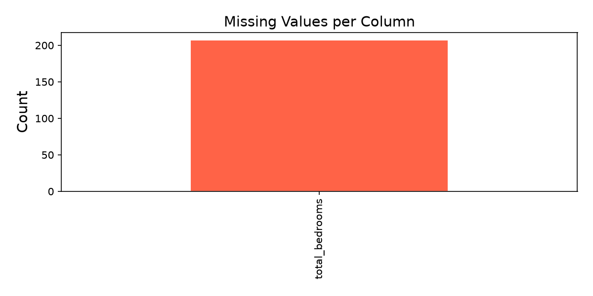
total_bedrooms has gaps.SimpleImputer(strategy="median") to fill missing values. The impact on downstream modeling is negligible at this missing rate.3. Feature Distributions
Histograms of all numeric features reveal their underlying distributions — several are right-skewed (total_rooms, total_bedrooms, population, households), while median_income is roughly log-normal. median_house_value shows an artificial cap at $500,006.
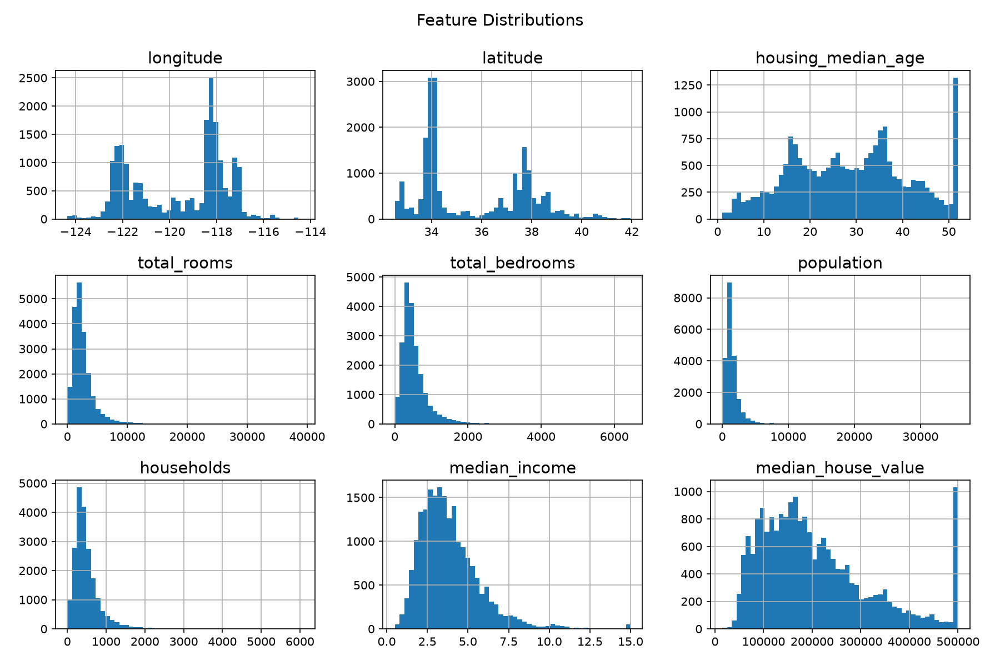
4. Target Distribution
The target median_house_value is right-skewed and capped at $500,006. The median (red dashed line) sits around $180,000. The cap affects ~2–3% of records.
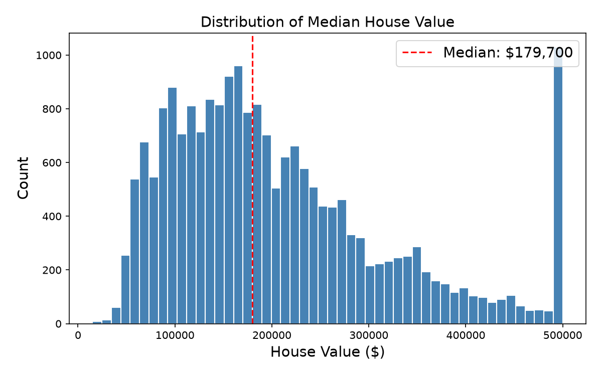
median_house_value with median marked.5. Geographic Distribution (Basic)
A simple scatter plot of longitude vs. latitude confirms the data traces the outline of California. Each dot is a census block.
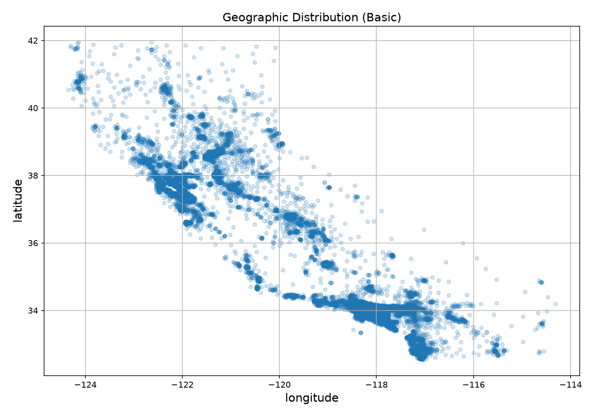
6. Geographic Distribution (Price & Population)
Color encodes median_house_value (jet colormap) and point size encodes population. Coastal clusters — Los Angeles, San Francisco Bay Area, San Diego — command the highest prices. Inland blocks are cheaper and less dense.
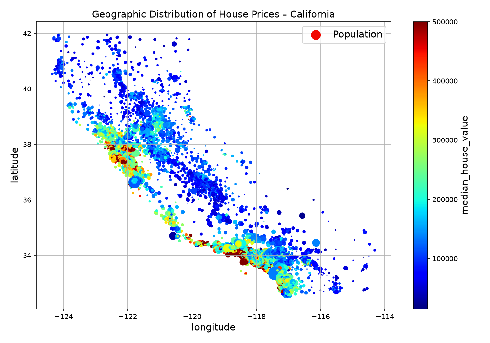
latitude and longitude are informative but their interaction is non-linear — tree models and MLPs can capture this naturally; linear models will need hand-crafted interactions.7. Correlation Heatmap
Pearson correlation matrix among all numeric features. median_income shows the strongest correlation with the target. total_rooms, households, and population are highly inter-correlated (multicolinearity).
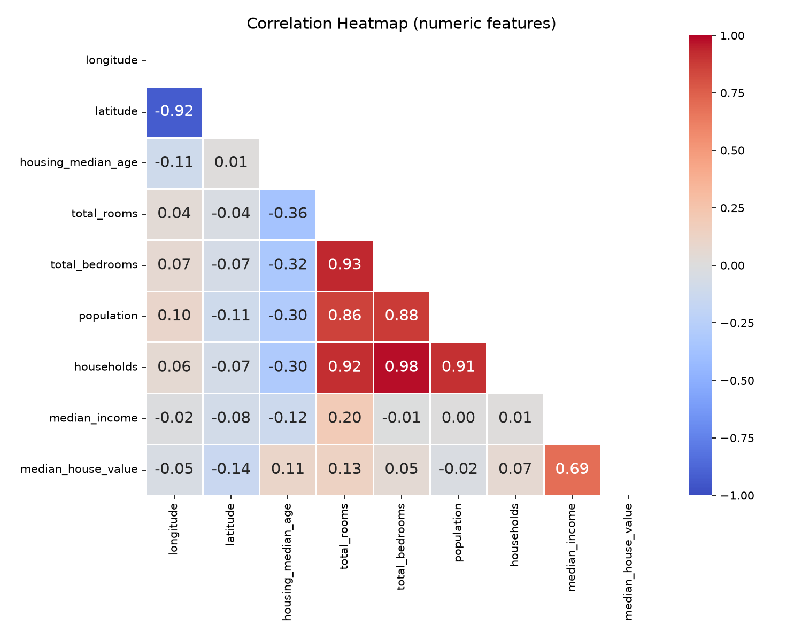
8. Target Correlation Bar
Sorted bar chart of each feature's Pearson correlation with median_house_value. median_income dominates (r ≈ 0.69). longitude and latitude have moderate negative/positive signals. housing_median_age has the weakest linear relationship.
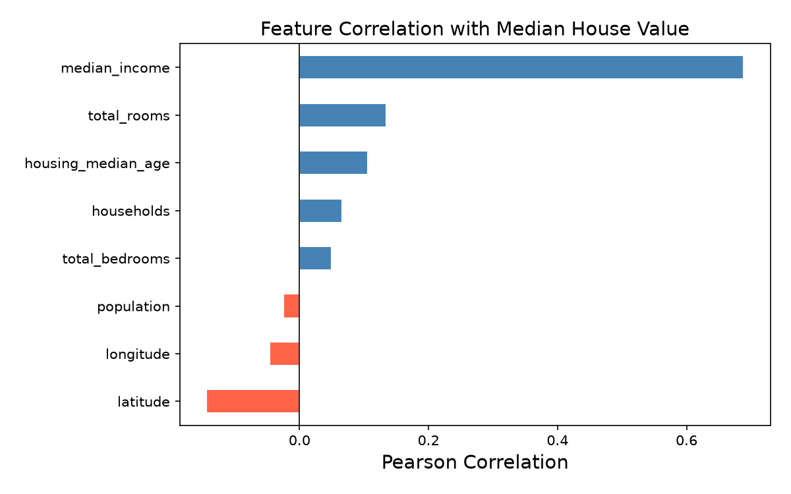
median_income is the clear leader.median_income. Non-linear models can extract additional signal from weak-correlation features.9. Scatter Matrix
Pairwise scatter plots for median_house_value, median_income, total_rooms, and housing_median_age. The income-price diagonal shows the characteristic curved ceiling; room count has a wide, noisy spread.
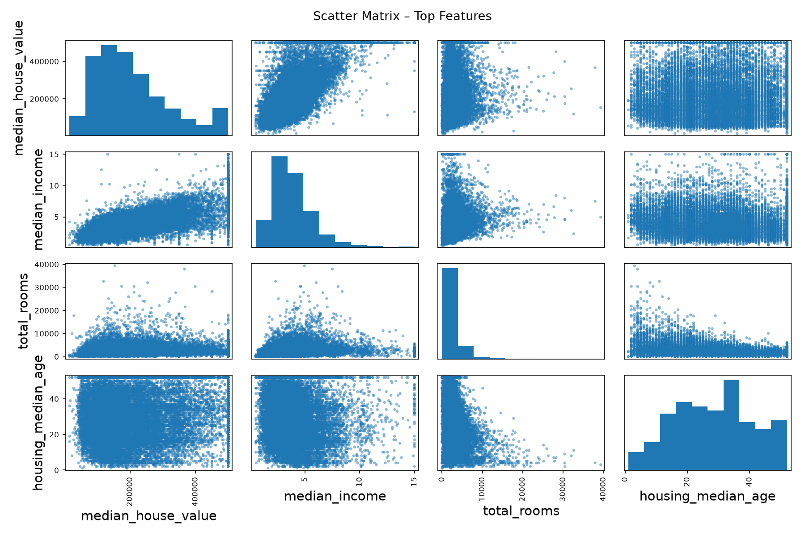
10. Income vs. Price
A detailed scatter of median_income vs. median_house_value. The positive trend is unmistakable, as is the horizontal ceiling at $500,006. A small number of high-income blocks sit below the main trend — possible outliers or data errors.
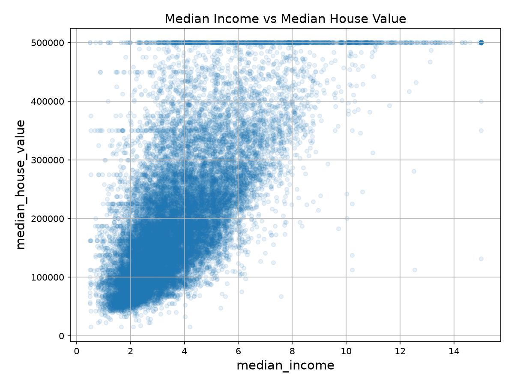
11. Ocean Proximity Analysis
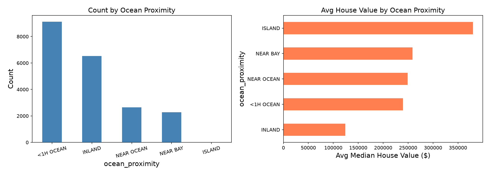
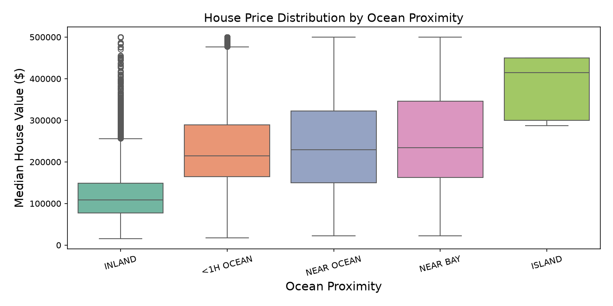
<1H OCEAN is the most common category. INLAND blocks have the lowest median prices — roughly $100k–$150k below coastal areas. The boxplot confirms that INLAND has a lower median and tighter IQR.
is_inland flag as a simple high-signal feature in addition to the full one-hot encoding.12. Engineered Features Correlation
Three ratio-based features are created from raw counts: rooms_per_household, bedrooms_per_room, and population_per_household. The bar chart compares their target correlations against all original features.
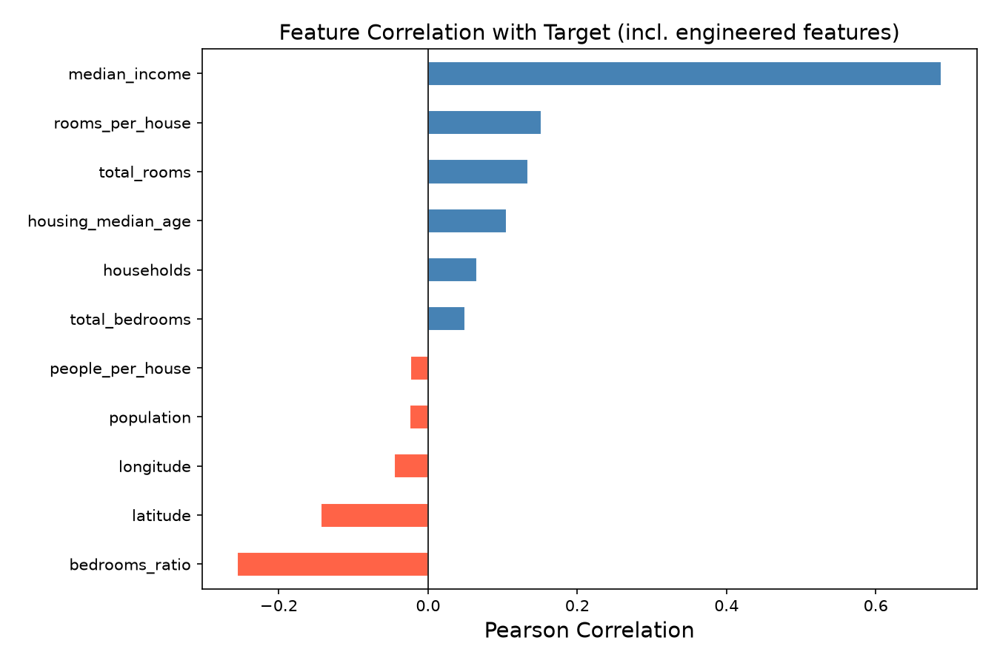
| Engineered Feature | Typical Correlation | Interpretation |
|---|---|---|
rooms_per_household | Moderate positive | Larger homes → higher property value |
bedrooms_per_room | Moderate negative | Higher bedroom density → smaller rooms → lower value |
population_per_household | Weak negative | Denser occupancy → lower value per unit |
bedrooms_per_room) shows meaningful correlation with the target, justifying its inclusion in the final modeling pipeline via CombinedAttributesAdder.13. Model Performance Comparison
Three models — Linear Regression, Multi-Layer Perceptron, and HistGradientBoosting — are trained from scratch on the same preprocessed data and evaluated on the held-out test set. The bar chart below compares RMSE, MAE, and R² side by side.

| Model | RMSE | MAE | R² | MAPE | Train Time |
|---|---|---|---|---|---|
| Linear Regression | $67,355 | $49,385 | 0.652 | 28.8% | 0.01s |
| MLP (3-layer) | $58,159 | $40,793 | 0.740 | 23.1% | 1.97s |
| HistGradientBoosting | $51,649 | $36,344 | 0.795 | 21.4% | 0.49s |
14. Training Loss Curves
Loss curves are plotted on a log scale to reveal convergence behavior. Raw epoch-level loss is shown as faint markers; the bold line is an EMA-smoothed trend.

How to read the loss curves:
- Linear Regression — Converges within ~50 epochs. The curve drops steeply then plateaus, indicating the learning rate (0.05) and epoch count (200) are appropriate.
- MLP — Converges more slowly, plateauing around epoch 200–300. The 500-epoch budget is sufficient; no evidence of overfitting (test performance validates this).
- HistGradientBoosting — Loss decreases monotonically across boosting iterations and stabilizes by iteration ~40. The jagged pattern is normal for an ensemble correcting residuals sequentially.
15. Log Transform Impact — Model Performance
The four count-based features (total_rooms, total_bedrooms, population, households) are right-skewed. A log1p transform is applied to compress the long tail and spread the dense low-value region. All three models are retrained on the log-transformed version of X_train with identical hyperparameters.

| Model | Version | RMSE | MAE | R² | MAPE |
|---|---|---|---|---|---|
| Linear | Original | $67,355 | $49,385 | 0.652 | 28.8% |
| Log | $66,931 | $49,511 | 0.657 | 28.8% | |
| MLP | Original | $57,508 | $41,793 | 0.747 | 25.6% |
| Log | $56,264 | $40,090 | 0.758 | 23.8% | |
| HGB | Original | $51,649 | $36,344 | 0.795 | 21.4% |
| Log | $51,733 | $36,722 | 0.794 | 21.6% |
16. Log Transform Impact — Loss Curves
Training loss curves for the log-transformed features (dashed lines) overlaid on the original curves (solid lines) for direct comparison.

How to read this chart:
- If the dashed line is consistently below the solid line for a model, the log transform helped that model converge to a lower loss.
- If the lines overlap or cross repeatedly, the transform had little effect.
- For Linear Regression, the dashed line should sit visibly below the solid one throughout training.
- For MLP, the improvement is more subtle but visible in the first 100 epochs.
- For HGB, the lines should be nearly identical, confirming tree-based invariance.